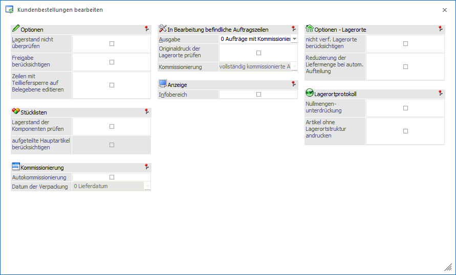
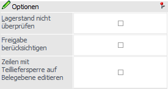
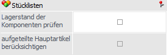
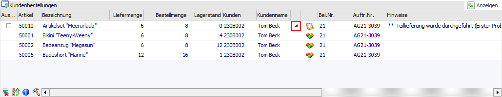
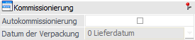
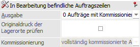
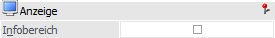
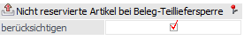
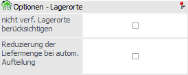
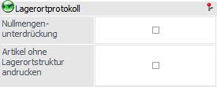

Durch Anwahl des Buttons "Optionen" im Programm "Kundenbestellungen bearbeiten" stehen weitere Optionen bzw. Einstellungen zur Verfügung.
Hinweis
Die gewählten Optionen bzw. Einstellungen werden benutzerspezifisch gespeichert.

Optionen

Ø Lagerstand nicht überprüfen
Wird diese Option aktiviert, werden alle Bestellungen zur Auslieferung vorgeschlagen, unabhängig davon, ob der Artikel auf Lager ist.
Ø Freigabe berücksichtigen
Durch Aktivierung dieser Option werden bei der Berechnung der auszuliefernden Menge jene Artikel, die über die Freigabe gesperrt oder auf zu prüfen stehen, nicht mehr berücksichtigt.
Ø Zeilen mit Teilliefersperre auf Belegebene editieren
Ist die Option aktiviert, werden auch Zeilen in der Tabelle "Sperrliste" angezeigt, welche aufgrund einer Teilliefersperre (auf Zeilen- oder Belegebene) nicht ausgeliefert werden können.
Achtung
Falls für Artikel eine (unerlaubte) Teillieferung erfasst wird, wird der Beleg erst beim Belegdruck abgewiesen!
Stücklisten

Ø Lagerstand der Komponenten prüfen
Durch Aktivierung dieser Option wird der Lagerstand von Handelsstücklistenkomponenten ebenfalls überprüft- Diese Überprüfung ermöglicht die folgenden Programmfunktionen:
ü Sollte für die Zusammenstellung der Handelsstückliste nicht genug Lagerstand bei den Komponenten vorhanden sein, so wird die Auslieferungsmenge der Stückliste auf die mathematisch mögliche Menge reduziert. Wie in "Kundenbestellungen bearbeiten" üblich, wird hierauf in der Spalte "Hinweise" aufmerksam gemacht (inklusive der Angabe des ersten Problemartikels).
ü Die Auslieferungsmenge der Handelsstückliste kann immer editiert werden, unabhängig davon, ob genügend Lagerstand bei den Komponenten vorhanden ist. Eine Ausnahme bildet hierbei eine bereits aufgeteilte Stückliste (d.h. eine Handelsstückliste mit Ausprägungen), bei welche eine Mengenänderung prinzipiell nicht möglich ist.
ü Die Komponenten der Handelsstückliste können jederzeit ein- und ausgeblendet werden, wobei die Menge automatisch von der Liefermenge der Handelsstückliste abgeleitet wird.
Beispiel

Achtung
Voraussetzung für die Verwendung der Option ist die Lizenz der Handels- und Fertigungsstückliste. Des Weiteren wirkt sich die Prüfung nicht auf aufgeteilte Handelsstücklisten aus und auf Stücklisten, welchem vom Lager genommen werden.
Hinweis
Wenn in der Handelsstückliste Komponenten mit Lagerortstruktur vorhanden sind, so findet bei diesen Stücklisten auch eine Überprüfung und ggfs. Reduzierung der Liefermenge statt, aber die Lieferscheinerstellung muss über die Belegerfassung geschehen.
Ø aufgeteilte Hauptartikel berücksichtigen
Handelt es sich um eine bereits aufgeteilte Handelsstückliste, so wird diese in der Tabelle Kundenbestellungen farblich unterlegt, eine Anpassung der Liefermenge ist nicht möglich und die Komponenten können nicht angezeigt werden.
Ist eine Anzeige der Komponenten gewünscht, so kann durch Aktivierung der Option "aufgeteilte Hauptartikel berücksichtigen" der eigentliche Hauptartikel, inklusive der Komponenten, zusätzlich angezeigt werden.
Hinweis
Es handelt sich hierbei um eine rein optische Information, welche sich nicht auf die folgende Lieferung auswirkt.
Kommissionierung

Ø Autokommissionierung
Durch die Aktivierung dieser Option wird beim Speichern der Liefermengeneingaben in "Kundenbestellungen bearbeiten" die Liefermenge automatisch im Hintergrund kommissioniert.
Hinweis
Ist noch keine Verpackungseinheit angelegt, wird automatisch eine Standardverpackungsart angelegt und verwendet. Ansonsten wird die Verpackungsart aus dem Beleg verwendet.
Achtung
Voraussetzung für die Verwendung der Option ist die Lizenz der Kommissionierung.
Ø Datum der Verpackung
An dieser Stelle kann bei einer aktivierten Autokommissionierung das Datum vorgegeben werden, mit welchem die Kommissionierung erfolgt, wobei folgende Varianten zur Verfügung stehen:
ü 0 - Lieferdatum
ü 1 - Tagesdatum
Hinweis
Das Verpackungsdatum ist am Ende über das Verpackungsjournal auswertbar. Die Kommissionierungsbuchung des Artikeljournals findet unabhängig von dieser Einstellung immer mit dem Tagesdatum statt.
In Bearbeitung befindliche Auftragszeilen

Ø Ausgabe
Über die Auswahlliste kann festgelegt werden, wie die Auftragszeilen behandelt werden sollen, für welche bereits eine Packliste gedruckt oder die Kommissionierung erfolgt ist. Folgende Varianten stehen zur Verfügung:
ü 0 - Aufträge mit Kommissionierung
bzw. gedruckter Packliste nicht anzeigen
Es werden nur Auftragszeilen
angezeigt, die noch nicht als Packliste im Originaldruck gedruckt oder die noch
nicht verpackt (kommissioniert) wurden.
ü 1 - kommissionierte Aufträge nicht
anzeigen
Es werden nur Auftragszeilen angezeigt, die noch nicht verpackt
(kommissioniert) wurden.
Hinweis
In einer eigenen Spalte wird mittels Symbol dargestellt, ob die Packliste bereits im Originaldruck ausgegeben wurde (nähere Informationen hierzu siehe Feld "standardmäßige Spalten nach "Lieferdatum"").
ü 2 - inkl. Aufträge mit
Kommissionierung bzw. gedruckter Packliste
Es werden alle Auftragszeilen
angezeigt.
Hinweis
Bei dieser Einstellung wird in einer eigenen Spalte mittels Symbol dargestellt, ob die Artikelzeilen vollständig oder nur teilweise kommissioniert wurden und ob die Packliste bereits im Originaldruck ausgegeben wurde (nähere Informationen hierzu siehe Feld "standardmäßige Spalten nach "Lieferdatum"").
Ø Originaldruck der Lagerorte prüfen
Durch die Aktivierung dieser Option werden pro Auftragszeile die Lagerorte auf Vorhandensein des Kennzeichens "Originaldruck" der Packliste kontrolliert. Dies kann zur Folge haben, dass Auftragszeilen nicht angezeigt werden, da die Packliste bereits für einen Lagerort ausgegeben wurde (Option "Ausgabe" = 0 - Aufträge mit Kommissionierung bzw. …") oder mit dem Symbol für "Originaldruck" versehen wurden (Option "Ausgabe" = "1 - kommissionierte Aufträge nicht anzeigen" oder "2 - inkl. Aufträge mit Kommissionierung bzw. …").
Achtung
Sämtliche Hinweismeldungen bezüglich einer bereits gedruckten Packliste können für Lagerorte nur ausgegeben werden, wenn die Option "Originaldruck der Lagerorte prüfen" aktiviert wurde.
Ø Kommissionierung
Wenn die Option "Ausgabe" auf "2 - inkl. Aufträge mit Kommissionierung bzw. ..." gestellt ist (siehe oben), können aus dieser Auswahlliste mit Mehrfachselektion, teilweise und / oder vollständig kommissionierte Aufträge ausgewählt werden. Je nachdem welche Art von Aufträgen ausgewählt wird, werden diese beim Druck des Anzeigen-Buttons in die Liefer- bzw. Sperrtabelle gepackt.
Hinweis
Ein teilweise kommissionierter Auftrag stellt eine Teilliefermenge dar, von der nur eine Teilmenge kommissioniert wurde. Ein vollständig kommissionierter Auftrag kann dagegen eine Teilliefermenge darstellen, von dem die gesamte Menge kommissioniert wurde.
Anzeige

Ø Infobereich
Wird diese Option aktiviert, wird neben der Kundenbestellungstabelle eine statische Anzeige geöffnet. In dieser stehen alle Variablen aus den Belegtabellen zum Andruck zur Verfügung, wodurch das Formular individuell angepasst werden kann (Formular Nr. P02W224I). Damit können z.B. Informationen wie Kostenstelle, Kostenträger, Projektnummer usw. angezeigt werden.
Option - Beleg-Teilliefersperre

Ø Nicht reservierte Artikel bei Belegteilliefersperre berücksichtigen
Wenn die Checkbox "nicht reservierte Artikel bei Belegteilliefersperre berücksichtigen" aktiviert ist, werden alle Artikel auf Grund einer fehlenden Reservierung, die eine Teilliefersperre auf Belegebene hinterlegt haben, in der Sperrtabelle angezeigt.
Standardmäßig ist diese Option nicht aktiviert und wird benutzerspezifisch gespeichert.
Optionen - Lagerorte

Ø nicht verf. Lagerorte berücksichtigen
Im Standard wird der Bestand von nicht verfügbaren Lagerorten bei der Berechnung des Lagerstands ignoriert, d.h. abgezogen. Mit Hilfe der Option "nicht verf. Lagerorte berücksichtigen" kann dieses deaktiviert werden.
Zusätzlich wirkt sich diese Option auf die automatische Aufteilung aus, d.h. ist die Option deaktiviert, werden die nicht verfügbaren Orte ignoriert.
Ø Reduzierung der Liefermenge bei autom. Aufteilung
Bei Nutzung des Buttons "Lagerorte automatisch aufteilen" wird die Liefermenge aufgrund nicht vorhandenem Lagerortbestands standardmäßig nicht reduziert (Lagerortkugel wird in "Orange" dargestellt). Mit Hilfe dieser Option findet in solch einem Fall eine Reduzierung statt, d.h. wenn aufgrund des Lagerortbestands nur ein Teil der Ware geliefert werden kann, wird die Liefermenge entsprechend reduziert.
Lagerortprotokoll

Ø Nullmengenunterdrückung
Mit Hilfe der Einstellung "Nullmengenunterdrückung" können Artikelzeilen mit einer Liefermenge von 0 auf dem Lagerortprotokoll unterdrückt werden. Dieses gilt für alle Artikel der Tabelle "Kundenbestellungen".
Ø Artikel ohne Lagerortstruktur andrucken
Bei der Aktivierung dieser Option werden Artikel ohne Lagerortstruktur auf dem Lagerortprotokoll ausgegeben.